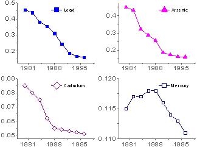
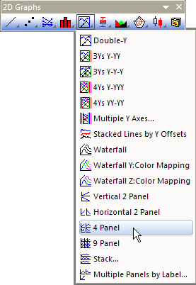

Diagramm mit 4 Feldern
4Panel-Graph
- 
Datenanforderungen
Wählen Sie mindestens eine Y-Datenspalte (oder einen Bereich aus mindestens einer Spalte) aus. Wählen Sie idealerweise vier oder mehr Wertespalten (oder einen Bereich aus vier oder mehreren Y-Spalten) aus. Wenn es eine verbundene X-Spalte gibt, stellt die X-Spalte die X-Werte bereit; ansonsten wird ein Abtastintervall der Y-Spalte oder Zeilennummer verwendet.
Bitte beachten Sie, dass die Anzahl der X-Spalten nicht mehr als vier für dieses Diagramm mit 4 Feldern sein sollte:
- Wenn es nur eine X-Spalte gibt, wird diese X-Spalte für alle Felder verwendet und alle Y-Spalten werden in diesen vier Layern gegen die gleichen X-Daten angeordnet; die Anordnungsregel der Zeichnung lautet, dass alle Y-Spalten eine nach der anderen in Reihenfolge und zyklisch in den Layer gezeichnet werden.
- Wenn es mehr als zwei X-Spalten gibt, werden die X-Spalten als Trennzeichen verwendet, um die Y-Spalten in Gruppen zu teilen, und diese zwei Gruppen Y-Spalten werden in Reihenfolge in die Layer gegen die angrenzenden X-Daten gezeichnet;
- Wenn es mehr vier X-Spalten gibt, können Sie diese Art von Diagrammen mit vier Feldern nicht zeichnen.
Diagramm erstellen
Wählen Sie die gewünschten Daten aus.
Wählen Sie .
oder
Klicken Sie auf die Schaltfläche 4-fach in der Symbolleiste 2D Grafiken.
- 
Vorlage
PAN4.OTP (im Origin-Programmordner installiert)
Hinweise
- Jede Spalte mit Y-Werten wird in ein separates Layer gezeichnet. Die Layer werden in zwei Spalten mit zwei Zeilen angeordnet.
- Ab Origin 2018b können Sie die Bedienelemente Allgemeine Anzeige des Dialogs Details Zeichnung für die gleichzeitige Bearbeitung von Layer-, Zeichnungs- und Achseneigenschaften in einer Grafik mit mehreren Layern verwenden. Weitere Informationen finden Sie unter Bedienelemente der Registerkarte Layer im Dialog Details Zeichnung.